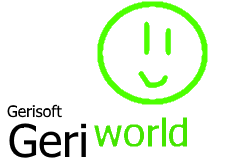

GeriWORLD
Leading the industry in geri-based chat clients.
What the hell is this?
GeriWORLD is a node.js and socket.io based chat client featuring everyone's most suspiciously loved green-shaped stickman. The client also uses speak.js to provide text-to-speech voices. It delays for a bit, but hey, it works.
It also uses Windows XP Design.
Why did you make this? Why WOULD you make this?
Just really for requests, I made this proportion website in a free use and a commercial purpose for use.
How do I use it?
- Enter a nickname (under 1K characters). If you don't enter one, you'll be named "Unknown".
- If the room is full, you can get them without full (junk) by entering the new room and it will let you go another room like this.
- Optionally, enter a room ID. If you want to join someone else, their room ID will be in the bottom-right corner of the screen.
- If you enter a room ID that doesn't exist, you will be placed in a private room which can only be joined by people you share the ID with.
- Be a Geri1940.
What are the chat commands?
If you see any brackets, they indicate a placeholder. Don't type them in.
/name [name]- Change your name.- There is a 1k character limit on names.
/speed [speed]- Change your voice's speed.- Max value is 200, min value is 50.
/pitch [pitch]- Change your voice's pitch.- Max value is 400, min value is 50.
/color [color]- Change your BonziBUDDY's color! The ones available are:- red
- brown
- green
- blue
- purple
- black
- pink
- yellow
- orange
- white
- dark_purple
- clippy
- peedy
- merlin
- max
- rover
- genie
- robby
- red_clippy
- pope
- peedy_pope
- clippypope
- inverted
- program
- If you don't type a color, you will be given one at random.
Pope Colors (Only certain people can use it)
Taken from: /pope, /pope2, /pope3Other/Misc
/joke- Tell a horribly written joke./video- Show an video. Beware of them porn!/img- Show an still image or animated image./video_legacy- Show an video using modified YouTube Adobe Flash (It's gonna be gone in 2020)/fact- Tell a horribly written "fact"./swag- Be a cool./earth- Spin the globe with a skilled finger./bang- Hit your chest "peeps" like donkey kong./clap- *applauses* - For clippy (soon also for peedy, clippy pope, and red clippy), you will congratulate an user!/think- Think something else!/sad- Be a unpleasant!/surfjoin- Join while you're still in the room./surfleave- Leave and Join while you're still in the room./surf- Jump and surf on big tsunami./laugh- Try to giggle./surprised- Woah! I'm surprised!/grin- Show the soft teeth./acid- Trippy. thank for windows93 for giving me a code/greet- Nice to meet you, Expand Dong!/shrug- ¯\_(ツ)_/¯ "explains"/wave- waves for welcome./wtf- fake yourself./sticker- send a little sticker./godmode- guess the godword./toppestjej- toppest? jej?/manchild- meatball is a manchild./ban- ban a user./kick- kick a user./unban- unban a user./ban_menu- opens the ban menu./nod \ /acknowledge- nod the head./css- send a css code./sendraw- send a raw text./godlevel- tells if your godlevel is./broadcast- sends an alert message./background- changes the chat background./confused- confuse it!/banana- eat a banana. Be a Bonzi veterinarian!/freeadmin- get a fake free admin./rant \ /onute- rants on someone./2018- 2018 is a bad year, kill the year now./behh- BEHH IS A WORST WORD EVER EVER!/zetar- Zetar Jackson is a criminal!/god- Be a god if you have a permission./beggar- you are beggar for pope giving./kiddie- you are fucking kiddie!/gofag- stop making grounded videos out of me./forcer- forced to color eggs./welcome- Hello, Bonzi./blackhat- What the fuck is going on with the Navy Seal copying instruction?/vaporwave2- alternative V A P O R W A V E/sing- sing a song./dm- send a direct message./group- create the direct message group./amplitude- change the voice's volume./limit- set limit of the room./write- start the write./write_once- write in a one./write_infinite- write infinitely./letsplay angrybirds, /letsplay rio, /letsplay zuma- play the flash game./backflip- slip the butt.- Do '/backflip swag' for extra points.
/youtube [video ID]- Play a YouTube video.- Alternatively, you can simply paste the URL in chat and it will automatically play it.
/bitview [video ID]- Play a BitView video./vlare [video ID]- Play a Vlare.TV video./asshole [name]- Call someone an asshole.- Don't ask why I implemented this. There's no answer.
- You can also right click on people to do the same thing.
- If you ever see a person named "Elizabeth Spires, heyjoeway or jakeylol123", make sure to notice her bulge.
/owo (or /uwu) [name]- o woah, what diss? uwu, what diss?- kill me
- Works pretty much the same as /asshole, right click and all.
/triggered- The best copypasta./linux- I'd just like to interject for a moment./pawn- Hi, my name is Geri, and this is my website.- Removed due to diffuclties of translation
/vaporwave- ＡＥＳＴＨＥＴＩＣ/unvaporwave- ＡＥＳＴＨＥＴＩＣ ＩＳ ＫＩＬＬ
Writing Emotes
Are there any rules?
Obviously no illegal shit. On top of that, there are a few limitations:
- All strings are sanitized to get rid of any malicious HTML/JS/CSS. Don't even try it motherfucker.
- There is a 256000 character limit in public rooms and a 35000 limit in private rooms.
- Yes, the Navy Seals copypasta fits.
- There is a 1k character limit on names.
- A max of 128 people are allowed in a public lobby. After that, a new public room will be created. A max of 512 people are allowed in private lobbies.
(Yeah, I know I changed the limit down from 15. With the limited screen space and processing power on mobile, this was part of the reason things were running so shitty.)
Remember that people can play YouTube videos whenever they want. Keep your volume down, headphone users. Chat rooms are for the most part unmoderated. If shit starts getting spambotty, I might start using my banhammer.
Shoutouts to
Simpleflips- Node.JS
- socket.io
- sanitize-html
- Grunt
- Winston
(hi there) - Express
- Create.js (Easel.js && Preload.js)
- jQuery
- jquery-contextmenu
- speak.js
- seedrandom
- realfavicongenerator.net
- Apache Cordova
- Sam Workman
- heyjoeway
- Windows 93
CrosswalkRIP CROSSWALK v1.?.? - v1.4.2- Geri1940
- scss/sass
You guys are awesome. (And so are you, whoever's reading this!) There are also probably some others I forgot. If I remember you, I'll add you here and be a BonziPOPE our this community.